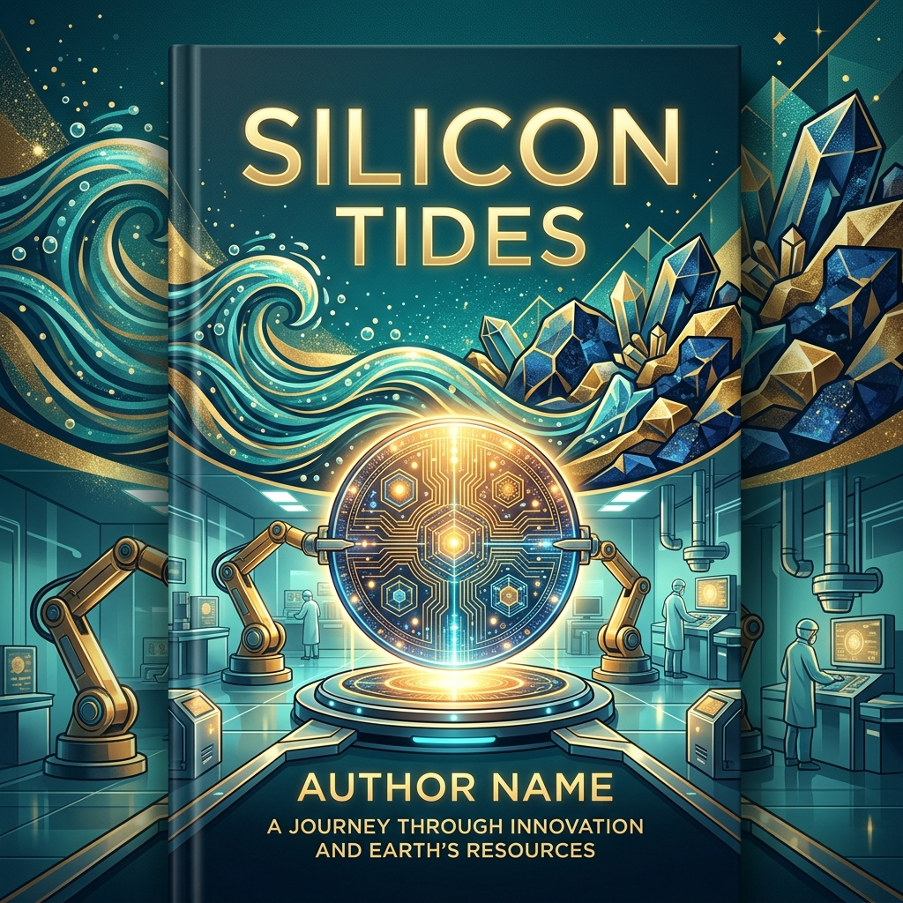

« Des atouts singuliers, des vulnerabilites tout aussi singulieres »

"La souverainete, au sens moderne, n'est plus seulement le controle d'un territoire et d'une frontiere. C'est le controle des infrastructures qui permettent a une societe de fonctionner. Et ces infrastructures sont de plus en plus numeriques."Reflexion d'un juriste specialise en droit du numerique
Quelque part en France. Un parc industriel en region. Automne 2025.
Le directeur industriel de cette PME de mecanique de precision est un homme pragmatique. Il a passe vingt ans a moderniser son outil de production, investissant regulierement dans des machines-outils numeriques, des logiciels de CFAO, des systemes de qualite. Son entreprise fabrique des pieces pour l'aeronautique et l'industrie de defense. Elle a une bonne reputation, un carnet de commandes solide, quarante employes.
En septembre 2025, il decide de franchir le pas suivant : automatiser partiellement une ligne de production avec un bras robotise pilote par vision artificielle, et connecter l'ensemble a un systeme de supervision intelligent qui optimisera les cadences en temps reel. Le gain de productivite estime : 30%. Le retour sur investissement : quatre ans. Le financement : en partie par un dispositif d'aide a la modernisation industrielle.
Trois semaines apres avoir depose sa demande de raccordement electrique supplementaire aupres du gestionnaire de reseau local, il recoit une reponse. Sa demande est enregistree. Le renforcement du reseau necessaire sera inscrit au plan de developpement quinquennal. Delai previsible : trente a quarante-deux mois.
Trente-cinq mois. Pres de trois ans. Pour un raccordement electrique qui conditionne le deploiement d'un investissement industriel deja finance et techniquement pret. Son concurrent allemand, qui s'est installe dans une zone industrielle de Pologne, a obtenu son raccordement en six mois. Ce n'est pas une legende industrielle. C'est une realite documentee que les organisations patronales francaises citent regulierement dans leurs analyses de la competitivite du territoire.
Ce directeur industriel n'est pas une victime de la transition numerique. Il en est un acteur volontaire. Ce qu'il se heurte, c'est au sol de la France, a ses reseaux electriques, a ses procedures administratives. A l'ecart entre l'ambition affichee de reindustrialisation et les infrastructures reelles qui la conditionnent.
Ce chapitre examine cet ecart depuis plusieurs angles, en commencant par les atouts reels que la France et l'Europe possedent dans la bataille de la souverainete energetique-numerique, avant de regarder avec la meme honnetet les vulnerabilites qui les accompagnent.
L'atout nucleaire francais : une carte a jouer, pas encore jouee
La France occupe dans le paysage energetique mondial une position qui est, en 2026, de plus en plus enviee. Son reseau electrique produit entre 65 et 75% de son electricite d'origine nucleaire, selon les annees et l'etat du parc. Quand les centrales tournent normalement, le bilan carbone de l'electricite francaise est l'un des plus bas d'Europe, comparable a celui de la Norvege avec son hydroelectricite et bien en dessous de l'Allemagne, qui brule encore du charbon et du gaz pour compenser la fermeture de son parc nucleaire.
Cette electricite bas-carbone et relativement stable en prix a deux effets concrets sur la geographie des data centers europeens. Le premier est l'attractivite : plusieurs projets de mega-data centers ont ete annonces ou sont en cours de construction en France ces dernieres annees, attires par la promesse d'une electricite propre et competitive. Le second est la tension : la puissance demandee par ces projets s'additionne a une demande industrielle et residentielle qui augmente elle-meme, et le reseau de distribution ne suit pas toujours.
Le parc nucleaire en 2026 : forces et fragilites
La France dispose en 2026 de cinquante-sept reacteurs nucleaires repartis sur dix-neuf sites, avec une puissance installee totale d'environ 63 gigawatts (depuis la mise en service commerciale de Flamanville 3 fin 2025). Ce parc a connu une periode difficile en 2022 et 2023, quand des problemes de corrosion sous contrainte ont oblige EDF a mettre en arret simultane un nombre record de reacteurs pour inspection et reparation. La production nucleaire est tombee a des niveaux que la France n'avait pas connus depuis les annees 1980, forçant des importations massives et une hausse des prix de l'electricite.
Le parc est depuis revenu a des niveaux de disponibilite plus normaux, mais l'episode a rappele une verite que les partisans du nucleaire preferent parfois oublier : la concentration de la production sur un seul vecteur, aussi fiable soit-il en regime nominal, cree une vulnerabilite systemique quand ce vecteur rencontre un probleme qui affecte plusieurs installations simultanément.
L'age moyen des reacteurs francais est d'environ 39 ans en 2026 (World Nuclear Association). Ils ont ete concus pour fonctionner quarante ans et plusieurs ont fait l'objet de demandes d'autorisation de prolongation jusqu'a soixante ans. L'Autorite de Surete Nucleaire donne ces autorisations installation par installation, apres inspection approfondie, et elle les conditionne a des travaux de mise a niveau parfois substantiels. Cette gestion de vieillissement est techniquement maitrisee mais elle absorbe des ressources d'ingenierie et de maintenance considerables.
Le programme EPR2 : l'ambition et le calendrier reel
En 2022, le president de la Republique a annonce un programme de construction de six nouveaux reacteurs EPR2, avec une option pour six autres. C'est la premiere annonce de construction de nouveaux reacteurs en France depuis la decision d'engager Flamanville 3 en 2007.
L'EPR2 est une evolution de l'EPR de premiere generation, dont Flamanville 3 est l'exemple francais le plus douloureux : commencee en 2007, la centrale n'a produit ses premiers kilowattheures commerciaux qu'en 2024, avec plus de douze ans de retard et un cout triple par rapport aux estimations initiales. Les concepteurs de l'EPR2 affirment avoir tire les lecons de Flamanville et de ses cousins finlandais et britanniques, en simplifiant la conception, en standardisant les composants et en prepararant plus soigneusement les chantiers avant de commencer les travaux.
Les premiers betonages du programme EPR2 sont attendus entre 2027 et 2029 selon les sites. La premiere mise en service ne serait pas anterieure a 2037 dans le scenario optimiste. C'est un horizon de onze a douze ans pour la premiere centrale, avec une incertitude considerable sur les delais et les couts.
Ce decalage temporel est une donnee importante pour comprendre le paysage energetique francais de la prochaine decennie. Entre aujourd'hui et la mise en service des premiers EPR2, la France devra gerer l'arret progressif de ses reacteurs les plus vieux, le developpement des energies renouvelables pour combler les ecarts, et une demande electrique qui va croitre sous l'effet de l'electrification des usages et du developpement des data centers. L'equation est serree.
Reacteurs nucleaires francais en 2026 56 unites puissance installee totale 61,4 GW
Age moyen du parc plus de 40 ans concu pour 40 ans, prolonge a 60 ans
Premier betonage EPR2 prevu 2027 a 2029 selon les sites retenus
Premiere mise en service EPR2 2037 au plus tot scenario optimiste
L'attractivite energetique et ses limites concretes
L'histoire de l'attractivite de la France pour les data centers est une histoire en deux temps. Premier temps : les grandes entreprises americaines decident d'installer des data centers en Europe pour repondre aux contraintes reglementaires sur la localisation des donnees des citoyens europeens (RGPD, reglements sectoriels) et pour reduire la latence avec leurs utilisateurs europeens. La France, avec son electricite bas-carbone et son infrastructure de connexion aux cables sous-marins transatlantiques, figure dans les listes des destinations attractives.
Deuxieme temps : les entreprises qui ont effectivement essaye de deployer de grands projets en France ont rencontre les realites du terrain. Les delais de raccordement electrique, d'abord. Les procedures d'autorisation environnementale, ensuite, qui peuvent s'etendre sur plusieurs annees quand des associations locales les contestent. La disponibilite du foncier adapte. Et, dans certains cas, des tensions sur les ressources en eau dans des regions qui commencent a connaître des periodes de stress hydrique en ete.
Le resultat est que l'Irlande, malgre ses problemes de saturation de reseau documentes au chapitre 3, reste en 2026 la principale destination europeenne pour les grands data centers des hyperscalers americains, pour des raisons fiscales et de facilite administrative qui pesent autant que les considerations energetiques. La France attire des projets, mais moins qu'elle ne pourrait le faire si son administration etait aussi agile que ses atouts energetiques le meritent.
La France a l'electricite la plus propre d'Europe continentale et l'administration la plus longue pour raccorder un data center. Cette contradiction n'est pas une fatalite. C'est un choix de procedures et de priorites qui peut changer. Mais il ne changera pas tout seul.
La strategie europeenne : ambitions reelles, frictions reelles
L'Europe n'est pas un acteur neutre dans la bataille de la souverainete energetique-numerique. Elle a des outils, une tradition reglementaire, une capacite industrielle residuelle, et une vision de la gouvernance numerique qui differe significativement de celles des Etats-Unis et de la Chine. Mais elle a aussi des fragilites structurelles et une tendance au consensus qui peut etre une force pour la construction de regles durables et un handicap pour la vitesse d'execution.
L'AI Act et ses implications energetiques implicites
Le reglement europeen sur l'intelligence artificielle, adopte en 2024 apres plusieurs annees de negociation, est le premier cadre legislatif complet sur l'IA dans le monde. Il classe les systemes d'IA par niveau de risque et impose des obligations proportionnelles. Les applications a haut risque (recrutement, credit, justice, infrastructures critiques) sont soumises a des exigences de transparence, de documentation et de supervision humaine. Les applications a risque inacceptable (notation sociale, manipulation cognitive) sont interdites.
Ce cadre n'aborde pas directement la consommation energetique des systemes d'IA. Mais il a des implications indirectes importantes. Les obligations de documentation et de transparence imposees aux systemes a haut risque incluent potentiellement une description de leur infrastructure technique, ce qui cree les conditions pour y integrer des informations sur leur empreinte energetique. La Commission europeenne a indique son intention de developper des actes delegues sur la durabilite des systemes d'IA, qui pourraient inclure des criteres d'efficacite energetique.
Plus substantiellement, l'AI Act cree un precedent : il affirme que l'IA n'est pas une zone de non-droit, que des obligations s'appliquent aux developpeurs et deployers de ces systemes, et que ces obligations peuvent etre renforcees par voie reglementaire sans attendre un consensus mondial. C'est une approche qui a suscite des critiques des entreprises tech americaines (trop rigide, freinera l'innovation) et des eloges des defenseurs des droits fondamentaux (enfin un cadre protecteur). La realite, comme souvent, se jouera dans les details de l'implementation.
GAIA-X : la vision et le chemin parcouru
GAIA-X a ete annonce en 2019 comme le grand projet europeen de cloud souverain. L'ambition etait de creer une infrastructure cloud dont les regles de gouvernance, de portabilite des donnees et de transparence seraient europeennes, permettant aux entreprises et administrations europeennes de stocker et traiter leurs donnees sans dependre exclusivement des hyperscalers americains soumis au Cloud Act americain.
En 2026, GAIA-X existe. C'est une association de droit luxembourgeois qui regroupe plusieurs centaines de membres, dont des entreprises europeennes, des administrations, des instituts de recherche, et aussi, ce qui a provoque un debat, des filiales europeennes de Microsoft, Amazon et Google. La question de savoir si la presence de ces acteurs dans GAIA-X est une ouverture pragmatique ou un detournement de l'ambition initiale a divise les observateurs.
Ce que GAIA-X a produit concretement en 2026, c'est principalement un cadre de certification (le label GAIA-X) et des specifications techniques de reference pour les services cloud conformes aux principes europeens. Des ecosystemes sectoriels se sont developpes, notamment dans la sante (European Health Data Space), l'automobile (Catena-X) et l'industrie manufacturiere (Manufacturing-X). Ces ecosystemes ont une realite operationnelle, meme si leur adoption reste partielle.
Ce que GAIA-X n'a pas produit, c'est un concurrent europeen credible aux hyperscalers americains en termes de puissance de calcul, de catalogue de services et de couverture mondiale. AWS, Azure et Google Cloud continuent de dominer le marche europeen du cloud d'entreprise avec une part de marche combinee superieure a 65%. Les acteurs europeens (OVHcloud en France, Hetzner en Allemagne, Scaleway, Ionos) existent et servent des segments du marche, mais ils n'ont pas les economies d'echelle qui leur permettraient de rivaliser sur l'ensemble des cas d'usage.
Mistral AI : ce que l'exception francaise peut faire et ne peut pas faire
Mistral AI est devenue en 2023 et 2024 le symbole de la capacite europeenne a produire des modeles d'IA de niveau mondial. L'entreprise parisienne, fondee par d'anciens chercheurs de Meta et DeepMind, a publie des modeles en open source qui se sont classes parmi les meilleurs de leur categorie en termes d'efficacite (performance par parametre, performance par watt). Elle a leve plusieurs centaines de millions d'euros aupres d'investisseurs europeens et americains. Elle est devenue une reference dans le debat sur la possibilite d'un ecosysteme IA europeen.
Mistral illustre deux choses simultanement. La premiere : le talent europeen, et francais en particulier, pour la recherche en IA est reel et de niveau mondial. Les grandes ecoles d'ingenieurs francaises, l'INRIA, les laboratoires universitaires forment des chercheurs qui sont recrutes par les meilleures entreprises mondiales, quand ils ne fondent pas les leurs. La deuxieme : les contraintes qui pesent sur une startup europeenne de l'IA sont structurellement differentes de celles de ses concurrentes americaines.
Mistral ne dispose pas de l'acces direct a des clusters de calcul comparables a ceux qu'OpenAI obtient via Microsoft Azure ou qu'Anthropic obtient via Amazon Web Services. Elle entrainent ses modeles sur des ressources cloud europeennes et americaines louees, ce qui signifie que ses couts d'entrainement sont plus eleves proportionnellement que ceux d'acteurs qui possedent leur propre infrastructure. Elle n'a pas acces aux memes capacites de recherche fondamentale sur les puces, puisque l'Europe ne dispose pas d'equivalent a Nvidia ou a TSMC pour les semiconducteurs avances.
Ces contraintes ne condamnent pas Mistral a l'echec. Elles definissent le terrain sur lequel elle compete, et ce terrain n'est pas le meme que celui de ses concurrents les mieux dotes. Mistral a trouve une voie en se concentrant sur l'efficacite algorithmique, les modeles open source qui creent un ecosysteme, et les partenariats avec des acteurs qui peuvent apporter l'infrastructure. C'est une strategie viable. Ce n'est pas la meme chose qu'une egalite de moyens.
Le Cloud de confiance et ses limites pratiques
La notion de Cloud de confiance est une creation franco-francaise qui merite un examen attentif parce qu'elle illustre bien la tension entre l'ambition de souverainete et la realite du marche.
L'idee est que certaines donnees sensibles des administrations et entreprises francaises (donnees de sante, donnees de defense, donnees strategiques industrielles) ne devraient etre hebergees que sur des infrastructures operees par des entites soumises exclusivement au droit francais et europeen, affranchies de l'extraterritorialite du droit americain, notamment le Cloud Act qui permet au gouvernement americain de demander l'acces aux donnees hebergees par des entreprises americaines ou leurs filiales, ou qu'elles soient dans le monde.
La solution imaginee est le modele de licence de technologie : une entreprise europeenne (Bleu pour Microsoft Azure, S3NS pour Google Cloud) obtient une licence pour operer la technologie de l'hyperscaler americain, mais l'exploite dans une structure juridiquement separee, sous controle francais, sans acces des employes du partenaire americain. Les serveurs sont en France, les donnees ne sortent pas, le partenaire americain percoit une redevance de licence mais n'a pas d'acces operationnel.
Ce modele a une logique juridique coherente. Il a aussi des limites pratiques importantes. La dependance technologique envers l'editeur americain subsiste entierement : si Microsoft ou Google decide demain de ne plus accorder la licence, ou de modifier substantiellement les conditions, l'operateur europeen n'a pas d'alternative immediate. Les mises a jour technologiques suivent le calendrier de l'editeur, pas celui de l'operateur europeen. Et le catalogue de services disponibles dans ces environnements certifies est systematiquement moins riche et plus en retard que celui disponible dans les environnements standard des memes editeurs.
C'est une amelioration par rapport a l'hebergement direct chez un hyperscaler americain. Ce n'est pas de la vraie independance technologique. Les deux affirmations sont vraies simultanement.
La souverainete numerique ne s'achete pas sur etagere. Elle se construit, lentement, par l'accumulation de competences, de capacites industrielles et de choix d'approvisionnement coherents sur le long terme. Un cloud certifie europeen qui tourne sur une technologie americaine sous licence est une etape, pas une destination.
La vulnerabilite des cables sous-marins : l'invisible fondation de l'economie numerique
Il y a une dimension de la souverainete numerique qui est presque completement absente des debats publics, probablement parce qu'elle est invisible et lointaine. Elle concerne des fils de verre de quelques centimetres de diametre qui reposent au fond des oceans.
Le reseau mondial qui ne se voit pas
Pres de 99% du trafic international de donnees transite par des cables sous-marins en fibre optique, pas par les satellites. Les satellites Starlink et ses concurrents transportent une part infime du trafic mondial, essentiellement dans des zones sans couverture terrestre. Un email envoye de Paris a San Francisco voyage physiquement par un cable qui part du Havre, traverse l'Atlantique Nord au fond de l'ocean, et arrive en Virginie ou a Long Island avant de remonter vers les serveurs de destination.
Le reseau de cables sous-marins compte en 2026 environ 550 systemes actifs, representant plus de 1,3 million de kilometres de cables. Chaque cable est un assemblage de plusieurs paires de fibres optiques entourees de couches de protection contre la pression, la corrosion et les anchres de pecheurs. La capacite de transmission d'un cable moderne peut atteindre plusieurs dizaines de terabits par seconde, soit l'equivalent de plusieurs millions d'appels telephoniques simultanement.
Ce reseau est remarquablement robuste dans ses redondances globales. Mais il a des points de concentration physique qui sont des vulnerabilites evidentes. Certains detroits geographiques voient passer une proportion disproportionnee du trafic mondial. Le detroit de Malacca, entre la Malaisie et Singapour, concentre plusieurs dizaines de cables qui relient l'Asie a l'Europe et au Moyen-Orient. Le canal de Suez et la mer Rouge concentrent les cables qui relient l'Europe a l'Asie en evitant l'Afrique. Le detroit du Bosphore concentre les connexions vers la mer Noire.
Les incidents qui rappellent la fragilite
En fevrier 2024, plusieurs cables sous-marins en mer Rouge ont ete endommages, probablement par des ancres de navires dans un contexte de tensions liees aux attaques des Houthis sur le trafic maritime dans la region. L'incident a provoque des perturbations significatives sur les connexions entre l'Europe et l'Asie, avec des ralentissements mesurables sur de nombreux services internet et une hausse des temps de latence pour les communications Asie-Europe. Il a fallu plusieurs semaines pour que les reparations soient effectuees et que les connexions soient pleinement retablies.
En novembre 2024, deux cables en mer Baltique ont ete sectiones, l'un reliant l'Allemagne a la Finlande, l'autre reliant la Suede a la Lituanie. Les enquetes ont rapidement oriente les soupcons vers un sabotage delibere, probablement commis par un navire qui avait traine son ancre sur plusieurs dizaines de kilometres selon une trajectoire trop precise pour etre accidentelle. L'incident a ranime les debats sur la vulnerabilite des infrastructures sous-marines aux actes de sabotage etatiques ou para-etatiques.
Ces incidents ne sont pas isoles. Des cables sous-marins sont endommages regulierement, le plus souvent accidentellement (ancres, chaluts de peche, glissements de terrain sous-marins), parfois par des actes deliberes. La plupart de ces incidents sont absorbes sans perturbation visible pour les utilisateurs finaux grace aux redondances du reseau. Mais a mesure que la concentration du trafic sur certains cables augmente, la resilience globale du systeme ne s'ameliore pas necessairement au meme rythme.
La strategie europeenne des cables et le role de la France
La France occupe une position geographique privilegiee dans la topologie mondiale des cables sous-marins. La cote atlantique francaise, et notamment les installations du Havre et de Brest, est un point d'atterrissage majeur pour les cables transatlantiques. Marseille est le principal hub europeen pour les cables qui arrivent de l'Asie via le canal de Suez et la Mediterranee. Ces deux positions font de la France un noeud critique de la connectivite numerique europeenne.
Les territoires francais d'outre-mer jouent egalement un role strategique peu visible. La Guyane, la Martinique, la Guadeloupe, la Reunion, Mayotte, la Nouvelle-Caledonie, la Polynesie francaise : chacun de ces territoires est un point d'ancrage pour des cables regionaux qui structurent la connectivite de zones geographiques importantes. La France est l'un des rares pays a avoir une presence physique sur tous les oceans, ce qui lui confere une capillarite dans le reseau mondial de cables que peu de nations peuvent egaler.
L'Union europeenne a commence a prendre conscience de cette vulnerabilite strategique. La Commission europeenne a publie en 2023 une communication sur la resilience des infrastructures de communication sous-marines. Des discussions sont en cours sur la necessite de financer des cables strategiques europeens, de proteger les zones sensibles d'atterrissage, et de developper des capacites de reparation rapide. Mais la concretisation de ces discussions en investissements et en protections operationnelles prend du temps, et les vulnerabilites identifiees restent, en 2026, largement non resolues.
Cables sous-marins actifs dans le monde environ 550 systemes representant 1,3 million de km
Part du trafic international par cables pres de 99% les satellites ne transportent qu'une fraction
Cables endommages par an (moyenne) environ 200 incidents principalement accidentels
Ce que cela signifie pour le citoyen et l'entreprise en France
Les enjeux de souverainete energetique-numerique ne sont pas reserves aux instances de gouvernance et aux grandes entreprises. Ils ont des implications concretes et quotidiennes pour les individus et les PME qui font la texture de l'economie et de la societe francaises.
La facture d'electricite et les data centers
La question de savoir si le developpement des data centers en France augmente les prix de l'electricite pour les menages et les entreprises est plus complexe qu'il n'y parait.
D'un cote, les grands consommateurs industriels comme les data centers beneficient de tarifs negocies qui refletent leur previsibilite de consommation et leur capacite a jouer un role de flexibilite pour le reseau. Ces tarifs sont inferieurs aux tarifs reglementes residentiels, ce qui peut creer un sentiment d'injustice dans le partage du cout des infrastructures de reseau.
De l'autre, les revenus generes par ces grands consommateurs contribuent a financer l'entretien et le developpement des reseaux de transport et de distribution, dont beneficient aussi les menages et les PME. Et la presence de grands centres de traitement de donnees en France est une condition de la disponibilite locale de services numeriques a faible latence, qui ont une valeur economique reelle pour l'ensemble des utilisateurs.
Le mecanisme de l'ARENH, Acces Regule a l'Electricite Nucleaire Historique, qui permettait aux fournisseurs alternatifs d'acheter une partie de la production d'EDF a un prix regule inferieur au marche, a pris fin en 2025. Son successeur, le systeme de contrats de long terme entre EDF et les grands consommateurs, est encore en cours de mise en place. La transition cree une periode d'incertitude sur les prix de l'electricite industrielle qui affecte directement la competitivite des investissements en France, y compris dans les data centers.
Ou sont vos donnees, et a qui ?
La question de la localisation geographique des donnees personnelles et professionnelles est devenue, depuis l'entree en vigueur du RGPD en 2018, un sujet de preoccupation croissante pour les entreprises et les particuliers. Mais la localisation n'est qu'une partie de la question. L'autre partie est la juridiction.
Une donnee stockee sur un serveur situe physiquement en Irlande dans un data center d'une filiale europeenne de Microsoft est soumise au droit irlandais et au droit europeen pour sa protection. Mais l'entite qui exploite ce service, si c'est une filiale d'une societe americaine, peut etre soumise a des injonctions legales americaines en vertu du Cloud Act, qui permet aux autorites americaines d'exiger l'acces aux donnees detenues par des entreprises americaines ou leurs filiales, independamment de leur localisation physique.
La Cour de justice de l'Union europeenne a rendu plusieurs arrets (Schrems I en 2015, Schrems II en 2020, et les decisions subsequentes) qui ont complexifie les transferts de donnees entre l'Europe et les Etats-Unis, reconnaissant la tension entre le droit europeen a la protection des donnees et les pratiques de surveillance americaines. Ces arrets ont force des renegociations et des adaptations, sans resoudre la tension fondamentale.
Pour l'entreprise ou le citoyen ordinaire, la consequence pratique est la suivante : si vous utilisez des services heberges exclusivement en Europe par des operateurs europeens non soumis a des juridictions extra-europeennes, votre niveau de protection juridique est maximum. Si vous utilisez des services d'un hyperscaler americain, meme via une filiale europeenne et des serveurs physiquement en France, il existe une possibilite juridique, dont la probabilite pratique de materialisation est debattue mais non nulle, que des autorites americaines puissent acceder a ces donnees.
Les choix concrets que vous pouvez faire
Je ne plaiderai pas ici pour un isolationnisme numerique qui serait a la fois impraticable et contre-productif. Les services des grands acteurs americains ont des qualites qui expliquent leur adoption massive, et priver les entreprises et citoyens francais d'y acceder ne resoudrait aucun des problemes de fond.
Mais il y a des choix qui ont du sens, individuellement et collectivement. Pour les donnees les plus sensibles, qu'elles soient medicales, juridiques, strategiques ou simplement personnelles et intimes, choisir des services heberges par des operateurs europeens sous juridiction exclusivement europeenne est une decision raisonnee. OVHcloud, Hetzner, Infomaniak, Scaleway et plusieurs autres acteurs europeens offrent des niveaux de service qui repondent aux besoins de la grande majorite des usages professionnels et personnels.
Pour les outils d'IA, la question est plus complexe parce que les modeles les plus performants sont actuellement ceux des acteurs americains. Mais des alternatives europeennes existent et progressent : Mistral AI propose des modeles accessibles via API et deployables localement, plusieurs autres initiatives europeennes sont en cours. Et l'installation locale de modeles open source sur des infrastructures maitrisees est une option techniquement accessible pour les organisations qui ont les competences internes pour la deployer.
La sobriete numerique est une autre dimension de ce choix. Non pas l'ascetisme, mais la conscience : est-ce que ce service a besoin d'etre heberge dans un data center a faible bilan carbone ou dans n'importe quel data center ? Est-ce que cet envoi d'email avec une piece jointe de 20 megaoctets ne pourrait pas etre remplace par un lien vers un fichier partage ? Est-ce que cette video de formation doit etre en 4K pour etre pedagogiquement efficace ? Ces questions ne changent pas le monde a l'echelle individuelle. A l'echelle de millions d'organisations et de centaines de millions d'utilisateurs, elles comptent.
Les metiers et la formation : l'urgence invisible
Il y a une dimension de la souverainete energetique-numerique qui est rarement placee au meme niveau que les cables, les puces et les centrales electriques, probablement parce qu'elle est diffuse et lente, et que ses effets se mesurent sur des decennies plutot que sur des trimestres. C'est la question des competences humaines.
La penurie documentee
France Travail, les organisations patronales sectorielles et les etablissements de formation s'accordent sur un diagnostic : la France manque d'ingenieurs et de techniciens dans les domaines qui conditionnent la souverainete energetique-numerique. Ingenieurs en genie electrique capables de concevoir et d'exploiter les reseaux intelligents de la transition energetique. Specialistes de la cybersecurite des infrastructures critiques. Physiciens et ingenieurs en microelectronique capables de travailler sur les technologies de semiconducteurs avances. Experts en exploitation et optimisation des systemes d'IA.
Cette penurie n'est pas propre a la France : elle est europeenne et mondiale. Mais la France y ajoute une specificite qui aggrave le probleme : le brain drain, le flux continu de ses meilleurs talents vers les Etats-Unis et, dans une moindre mesure, vers le Royaume-Uni et la Suisse.
Le brain drain : mesurer ce qu'on prefere ne pas regarder
Estimer avec precision le brain drain francais dans les domaines de l'IA et des technologies numeriques est difficile, parce que les statistiques de mobilite des personnels tres qualifies sont fragmentaires. Mais les signaux convergent.
Les entreprises francaises les plus prestigieuses dans ces domaines (Mistral AI, Hugging Face, Nabla, Owkin, et plusieurs autres) ont toutes des cofondateurs, des dirigeants ou des chercheurs qui ont ete formes en France et ont travaille plusieurs annees aux Etats-Unis avant de revenir. Hugging Face, la plateforme de partage de modeles d'IA qui est devenue une reference mondiale, a ete fondee par des Francais mais est basee a New York. Ce n'est pas un hasard : les investisseurs, les partenaires technologiques et les piscines de recrutement sont la ou les ecosystemes sont les plus denses.
La difference de remuneration entre un ingenieur en IA travaillant a Paris et le meme profil travaillant a San Francisco, Seattle ou New York est substantielle. Selon les estimations disponibles, un ingenieur senior en ML avec cinq a sept ans d'experience peut esperer une remuneration totale (salaire, bonus, actions) deux a quatre fois superieure aux Etats-Unis qu'en France, en tenant compte des differences de cout de la vie mais pas de la fiscalite. La fiscalite francaise aggrave encore l'ecart pour les hauts revenus.
Des programmes comme le pass French Tech, les aides a la creation d'entreprise innovante, les chaires d'excellence dans les grandes ecoles, les laboratoires communs universites-industrie produisent des resultats. Il y a davantage de startups deeptech en France en 2026 qu'il y a dix ans, davantage d'investissement en capital-risque, davantage de chercheurs qui restent. Mais l'ampleur de l'effort reste disproportionnee par rapport a l'ampleur du defi.
La formation comme enjeu de souverainete individuelle
Il y a une dimension de la question de formation qui depasse les politiques publiques et qui concerne chaque individu dans sa relation a la transition numerique. C'est la question de la litteratie numerique et de l'IA.
Un citoyen qui ne comprend pas les fondements de l'IA, qui ne sait pas interroger les systemes qu'il utilise, qui n'est pas capable d'evaluer la fiabilite d'une information generee par un modele, est dans une relation de dependance et de vulnerabilite vis-a-vis des outils qui structurent de plus en plus son environnement informationnel, professionnel et social. Cette dependance est une forme de perte de souverainete individuelle.
Le premier volume de cette collection etait largement consacre a cet enjeu de formation et d'agentivite face a l'IA. Je n'y reviendrai pas en detail ici. Mais il est important de souligner que la formation a l'IA et au numerique n'est pas seulement un enjeu de competitivite economique : c'est un enjeu civique et democratique. Les decisions collectives sur la gouvernance de ces technologies ne pourront pas etre prises de maniere eclairee par des citoyens qui n'en comprennent pas les mecanismes de base.
La formation continue des adultes en activite, la requalification des travailleurs dont les metiers sont transformes par l'automatisation, l'initiation des jeunes aux concepts fondamentaux de l'informatique et de l'IA des l'ecole primaire : ce sont des investissements dont les rendements sont diffus, lents et difficiles a mesurer dans un cycle electoral. Ce sont aussi les investissements les plus structurants pour la capacite d'une societe a maitriser les technologies qui la traversent plutot que d'en etre traversee.
La souverainete numerique d'un pays commence dans les salles de classe et dans les programmes de formation continue, bien avant d'atteindre les data centers et les reseaux electriques. Une population qui comprend les outils qu'elle utilise est une population qui peut en controler l'usage collectif. Une population qui les subit sans les comprendre est une population qui ne peut que les subir.
Ce que l'Europe peut faire que les Etats ne peuvent pas faire seuls
La discussion sur la souverainete energetique-numerique se tient souvent au niveau national, ce qui est comprehensible politiquement mais insuffisant techniquement. Les realites physiques et economiques qui structurent ce domaine sont europeennes et mondiales, pas hexagonales.
La masse critique europeenne
L'Europe a une masse critique que nul Etat membre pris isolement ne peut rivaliser avec les grands acteurs mondiaux. Le marche unique europeen compte 450 millions de consommateurs et des millions d'entreprises qui representent un pouvoir d'achat et un volume de donnees considerables. Un editeur de service numerique qui veut acceder a ce marche doit respecter les regles europeennes, quelle que soit sa nationalite. C'est le levier fondamental de la regulation europeenne du numerique, et l'AI Act en est l'illustration la plus recente.
En matiere d'energie, la mise en place d'un marche europeen de l'electricite plus integre, avec des capacites d'interconnexion renforcees entre les pays membres, permettrait une meilleure valorisation des specificites de chaque pays. L'electricite eolienne du nord de l'Europe (Scandinavie, mer du Nord) est complementaire a l'electricite solaire du sud (Espagne, Portugal, Grece) et a l'electricite nucleaire stable de la France. Un reseau plus interconnecte permettrait d'optimiser l'utilisation de ces differentes sources et de reduire la dependance de chaque pays aux sources fossiles d'appoint.
Le Critical Raw Materials Act et ses limites
L'Union europeenne a adopte en 2023 le Critical Raw Materials Act, qui fixe des objectifs de diversification des approvisionnements en metaux critiques pour 2030 : produire au moins 10% des besoins sur le sol europeen, traiter au moins 40% sur le sol europeen, ne pas dependre d'un seul pays tiers pour plus de 65% d'un metal strategique.
Ces objectifs sont ambitieux et leur realisation implique des choix politiques et des investissements qui ne sont pas tous facilement acceptables. Ouvrir de nouvelles mines en Europe est une option techniquement realisable dans plusieurs cas (lithium au Portugal, nickel en Finlande, terres rares en Suede, cobalt en Finlande et en Suede), mais qui se heurte a des oppositions locales significatives, a des procedures d'autorisation longues, et a des couts de production generalement superieurs aux approvisionnements extra-europeens.
Le recyclage des metaux critiques des equipements electroniques en fin de vie est une alternative plus politiquement consensuelle, mais qui necessite des investissements dans les infrastructures de collecte et de traitement, et dont le potentiel est limite par les quantites de metaux disponibles dans les gisements urbains existants.
L'honnettete oblige a dire que l'Europe est encore tres loin des objectifs du Critical Raw Materials Act, et que le chemin pour les atteindre en 2030 implique des decisions que les gouvernements europeens n'ont pas encore prises ou n'ont prises que partiellement.
La convergence necessaire des politiques energetique et numerique
Il y a un angle mort dans la plupart des discussions sur la souverainete europeenne : les politiques energetique et numerique sont conduites dans des cadres administratifs et legislatifs largement separes. La Direction generale Energie de la Commission europeenne et la Direction generale Connect sont deux entites distinctes avec des agendas qui se croisent mais ne sont pas coordonnes de maniere systematique.
Or les liens entre energie et numerique sont, comme tout ce livre le montre, profonds et bidirectionnels. Les decisions sur le mix energetique europeen conditionnent la competitivite des entreprises numeriques europeennes. Les decisions sur la regulation des data centers conditionnent la demande energetique et les prix de l'electricite. Les decisions sur les standards de durabilite du numerique conditionnent l'innovation dans les technologies d'efficacite energetique.
Une politique coherente de souverainete energetique-numerique europeenne necessiterait une coordination que les institutions actuelles ne permettent pas naturellement. Elle est possible : l'exemple de la coordination qui a permis l'adoption simultanee du Green Deal et de la strategie numerique europeenne montre que la Commission peut integrer ces dimensions quand la volonte politique est la. Mais cette coordination doit etre active et permanente, pas episodique.
La France, qui preside regulierement le Conseil de l'Union europeenne et qui a une tradition d'influence dans la construction des politiques industrielles europeennes, est bien placee pour jouer un role moteur dans cette integration. Elle a les atouts energetiques et les competences numeriques pour etre credible. Il lui manque, pour l'instant, une vision strategique assez claire et assez partagee pour entrainer les partenaires europeens.
Notes et sources — Chapitre 7
• Parc nucléaire français 2026 : 57 réacteurs opérationnels, ~63 GW — World Nuclear Association, profil France, actualisé 1er avr. 2026.
• Part nucléaire dans mix électrique (~70%) : WNA, profil France, données 2024.
• Âge moyen du parc (~39 ans) : WNA, profil France, avril 2026.
• Flamanville 3 : début construction déc. 2007, couplage réseau déc. 2024, puissance 100% déc. 2025 — WNA ; EDF.
• Programme EPR2 (6 réacteurs) : annonce présidentielle, 10 fév. 2022 ; loi d'accélération nucléaire adoptée mars 2023.
• ARENH fin 31 déc. 2025 : WNA ; CRE.
• Câbles sous-marins mer Rouge endommagés (fév. 2024) : SubTel Forum, mars 2024 ; DataCenterDynamics, 26 fév. 2024.
• Câbles mer Baltique sectionnés (nov. 2024) : Reuters, 18 nov. 2024 ; enquêtes en cours.
• Critical Raw Materials Act : règlement (UE) 2024/1252, adopté 2023, publié mai 2024 ; Commission européenne.
• Parts de marché cloud EU (AWS/Azure/GCP >65%) : Synergy Research Group, données 2024-2025.
Chapitre suivant :
Le manifeste energetique
Choisir le futur que l'on veut alimenter